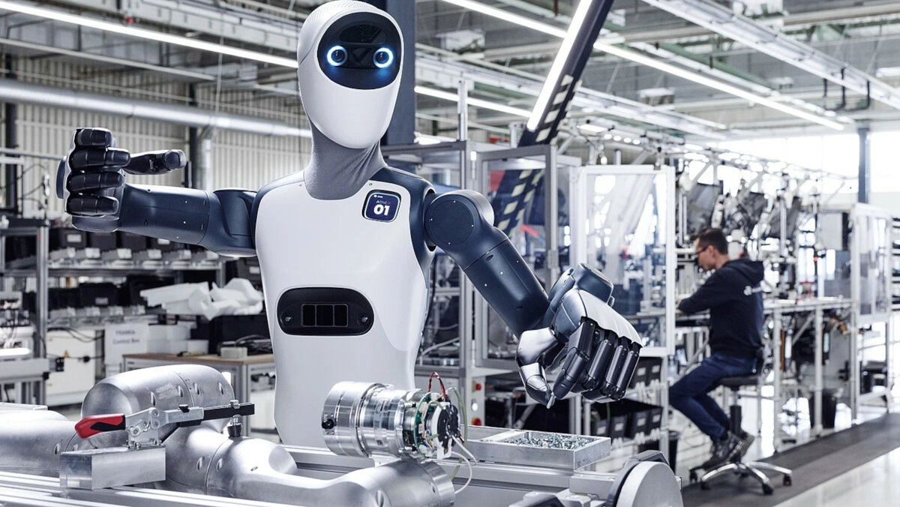

Компания Agile Robots из Мюнхена объявила о закрытии раунда Series F: 500 миллионов долларов привлечения при оценке в 8,5 миллиарда. Общий объём вложенных в компанию средств теперь около двух миллиардов. Раунд возглавила SoftBank Group, среди участников — чипостроитель Nvidia, промышленная группа Hitachi (Hitachi и Hitachi Ventures) и инвесткомпания T.Capital.
Agile Robots занимается так называемым физическим ИИ (Physical AI): учится соединять модели искусственного интеллекта с реальной механикой — гуманоидные и мобильные роботы, роботизированные руки и манипуляторы, плюс собственное ПО и модели. Среди заказчиков — автопром, потребительская электроника, медицина и логистика. По данным компании, по миру уже развёрнуто более 20 000 её автоматизационных решений, работают свыше 3500 человек, из них более 2000 — исследователи и разработчики, а портфель патентов превышает 650.
Свежие деньги пойдут на усиление присутствия в США, новые производственные мощности (в том числе в Германии) и выход на новые рынки. В начале 2026 года компания запустила новую площадку в Фюрстенфельдбруке под Мюнхеном — она рассчитана на выпуск до 10 000 шагающих и колёсных гуманоидных роботов в год. Основатель и гендиректор Чжаопэн Чэнь, выходец из Немецкого аэрокосмического центра DLR (оттуда компания отпочковалась в 2018-м), формулирует амбицию просто: «Мы выводим физический ИИ из лаборатории прямо в серийное промышленное производство».
За ростом компании стоит стратегия покупок: в группу уже вошли производитель манипуляторов Franka Robotics, «дочка» BMW idealworks, а недавно — подразделение автоматизации Krause Automation у thyssenkrupp. Примечательно, что Nvidia инвестировала сразу в двух игроков гонки гуманоидов за последние сутки: на этой неделе SoftBank и Nvidia профинансировали именно Agile Robots, тогда как Nvidia одновременно остаётся партнёром и поставщиком чипов для почти всех остальных — от Tesla до десятков стартапов на платформе Isaac GR00T, на которой, кстати, построен и референсный гуманоид Agile ONE SN самой Agile Robots.
Раунд подчёркивает: рынок перестал верить в гуманоидов-демонстраторов и платит за промышленных роботов с осязаемым внедрением. 20 000 инсталляций и 650 патентов — редкий для «человекоподобной» отрасли аргумент: Agile Robots зарабатывает на заводской автоматизации уже сейчас, а не обещает зарплату будущего. Для сравнения, свежий раунд британского ИИ-чипмейкера Fractile, о котором мы писали позавчера, принёс 720 миллионов при оценке в 7 миллиардов — капитал явно перетекает к связке «чипы + роботы», где SoftBank и Nvidia сидят сразу с обеих сторон.